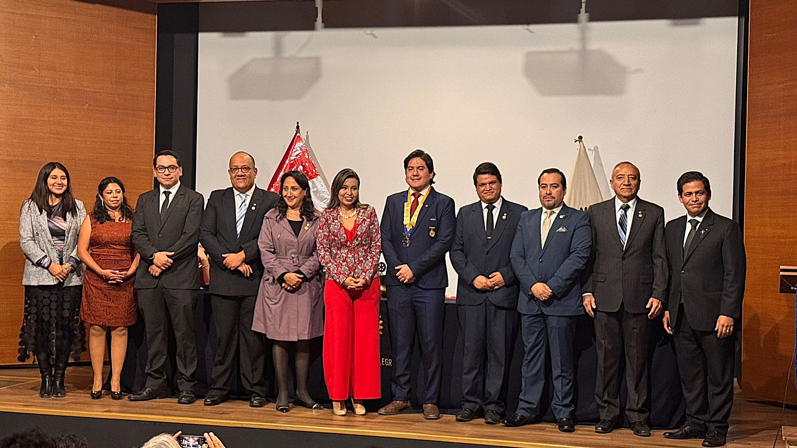
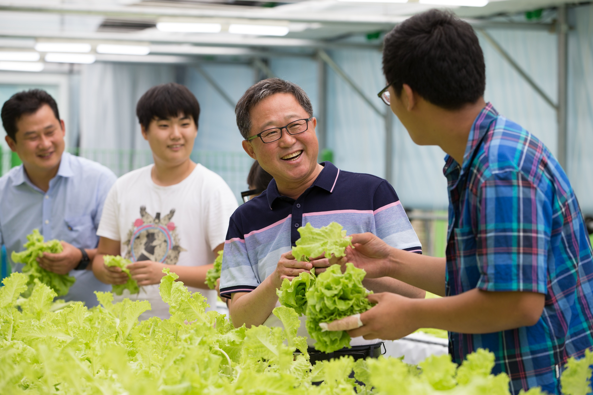
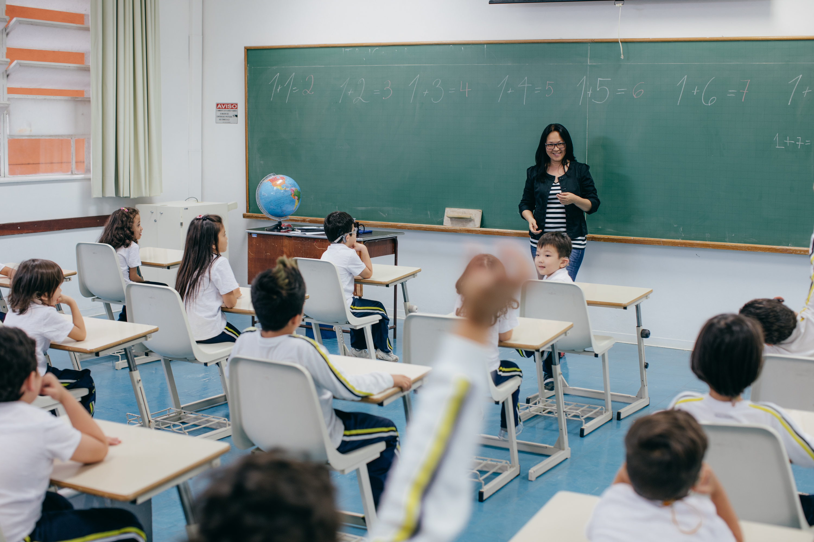

Educación
Talleres de Liderazgo
Capacitación en habilidades blandas para estudiantes de secundaria de colegios locales.
Jóvenes líderes tomando acción y cambiando realidades.
El Club Rotaract Arequipa Selva Alegre nació con la visión de empoderar a los jóvenes de nuestra ciudad. Somos una red global de jóvenes adultos que toman acción para resolver los problemas más apremiantes de nuestras comunidades.
Nuestra misión es desarrollar el liderazgo y la capacidad profesional mediante el servicio, fomentando la amistad y el compañerismo.

Capacitación en habilidades blandas para estudiantes de secundaria de colegios locales.

Plantación de más de 200 árboles en parques de la localidad con participación vecinal.

Jornada de donación de sangre en alianza con hospitales regionales y el banco de sangre.